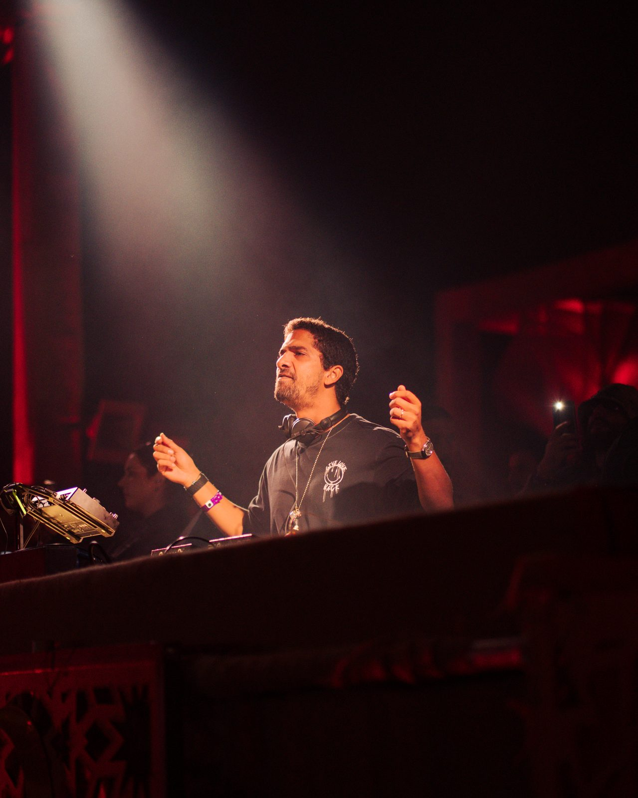
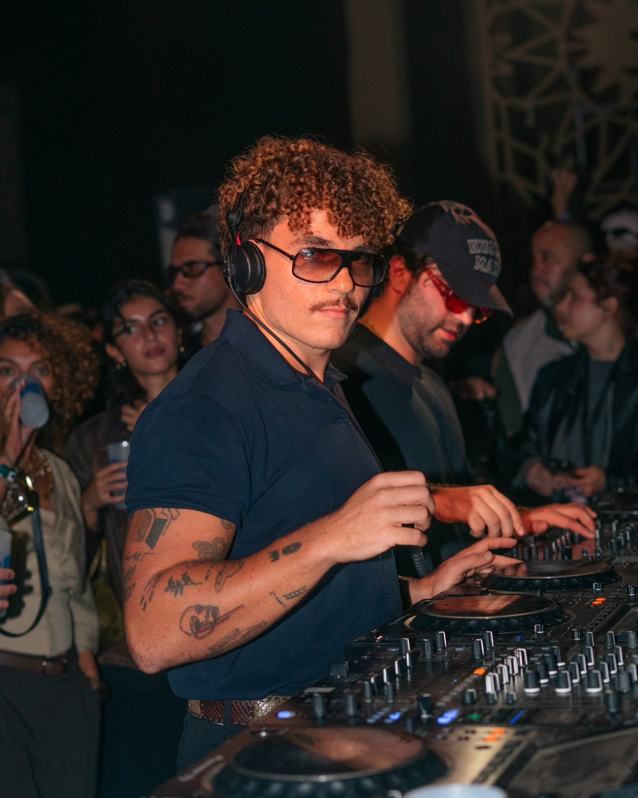
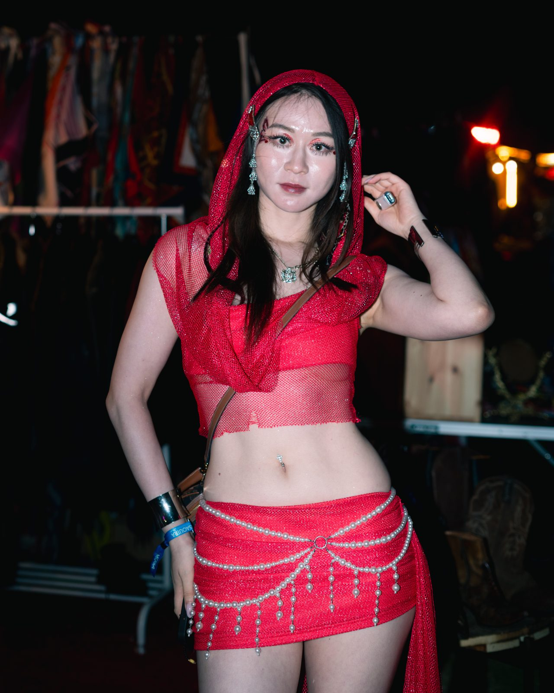
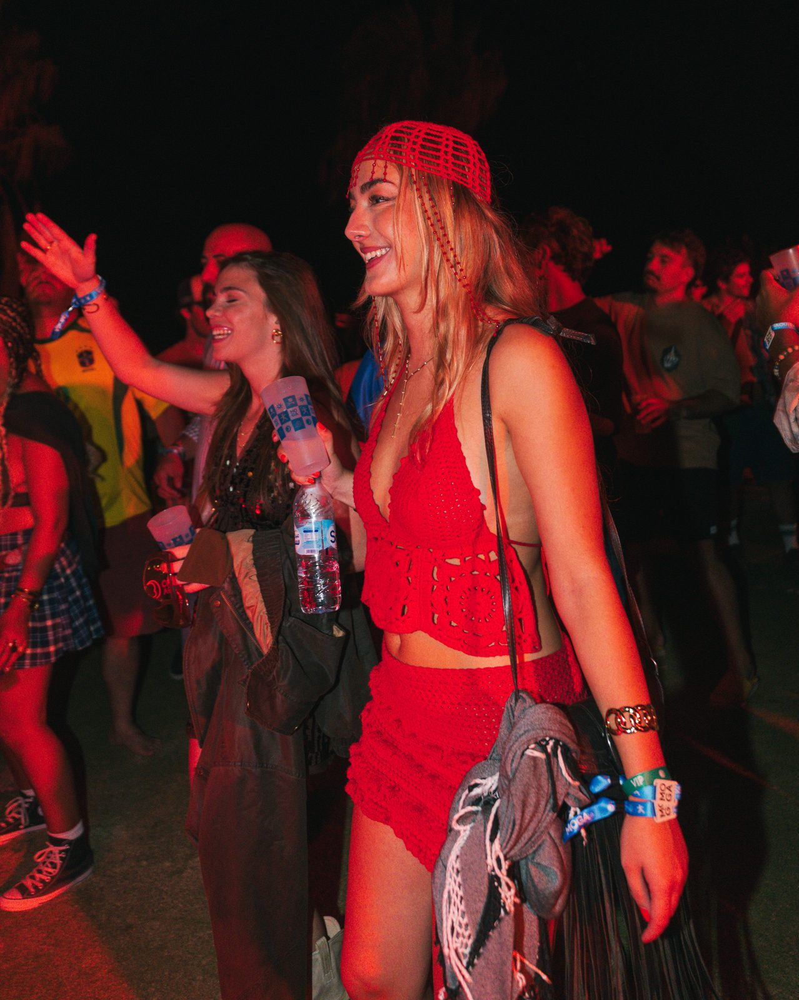

October 8, 2026 — Report
MOGA Festival 2026 in Essaouira — Photo Report

From October 1 to 5, 2026, Essaouira pulsed to the rhythm of the 10th MOGA Festival, one of Morocco's most unique electronic music festivals. For three days, I had the privilege of covering the event with a press accreditation, camera in hand, up close to the stages, the artists and the crowd.
Three days at the heart of the festival
Shooting a festival like MOGA means never stopping: the light shifts every hour, the crowd lives to the rhythm of the sets, and decisive moments give no warning. Between red-lit stages, flash portraits and the raw energy of the dancefloor, each series tells a different side of those Essaouira nights.
This festival photo report is the result of three nights of total immersion — over 160 selected images delivered to the festival's communications team.


Event photographer in Morocco
Based in Agadir and available in Marrakech, I shoot photo reports for festivals, concerts and events across Morocco. If you're organising an event and looking for a photographer who can capture its energy the way it feels — get in touch.

An event to cover? Let's talk.
Book a date